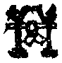

醫令嗽毒
嗽。音速。吮也。吮。食允反。
止觀輔行傳弘決助覽卷第二
止觀輔行傳弘決卷第四
醫令嗽毒
嗽。音速。吮也。吮。食允反。
乃至未貪欲心。非生非不生十六句
餘三句令例初句。今為例作第四句。使前二句可作。應云為貪欲已。心滅。未貪欲心非生非不生。為貪欲已。心不滅。未貪欲心非生非生非不生。為貪欲已。心亦滅亦不滅。未貪欲心非生非不生。為貪欲已。心非滅非不滅。未貪欲心非生非不生。
事助
如方等歷幡壇道具中修觀者是。
七識正因種
彼經云。六入為種。七識處為種。此七識者非第七識之識也。此第七識乃了因種耳。今云正種者。疏引什法師釋云。欲界為一。三禪三空為六。合為七識住。所以然者。三惡苦多識不樂住。第四禪識色微故。又無想天識不樂住第四無色。以非想法微故識不樂住。隨識樂住即是法性。故得為種。已上止文。
怫
音佛。恕也。
因緣一法治邪癡故
十二因緣治斷常癡。
不善四句如無禁
貪欲即是道等四句。
嫄
音原。
齓
初覲反。毀齒也。
獫狁
獫。本作玁。音險。狁。音允。皆畜種。故字從犬。
薰鬻
薰。本作[打-丁+薰]。鬻。音育。夷名也。
幾盡
上巨依反。近也。謂近盡。
酣
胡甘反。嗜酉酒為樂。
歠
與啜同。
高陽之子
顓頊。姓高陽氏。
五馬
兄弟五人。
叡
音慧。
莅
音利。
祲
音浸。天邊之妖氣。
爝
音雀。
覘
勑艶反。窺覷也。
甄
音真。姓也。
巋
苦軌反。
髠
苦昆反。
嬙
音牆。
柤
音櫨。
狙
子余反。猿屬。性多詐。
齕
痕沒反。亦嚙也。
六牛經六年。展轉六十牛
六牛六年各生子。為三十六子。并母成四十二也。牛子第五者。至第五年第六年各生一子。是第五各生兩子也。第六牛只各生一子。牛孫共生十八子。是則母兒孫共為六十牛。經中以六牛展轉。喻比丘從戒生禪。從禪生慧而成六神通。
但結提吉
從諫者吉。不從諫者提。
論。依律擯治
律有三擯。一不見擯。二不懺擯。三惡邪不除擯。若人犯夷。人勸懺悔。答云。我不見罪。佛令作不見擯。又若犯者。人勸懺悔。答云。我雖見罪。不能懺悔。佛令作不懺擯。若如利吒言。婬欲不障道佛。令作惡邪不除擯。
體外之惑
疏云。體上之惑。
初聞佛偈
住住央掘摩等。凡三百六十七偈。
論痺
必至反。
街衖
衖。與巷同。
癵踡
上呂員反。下巨員反。跛。躄病也。
寱
魚際反。睡中語。
亦有不曉世語達遠理者。如會稽道樹寺頓悟禪師。能悟深理而不曉近事。出涅槃疏
涅槃疏云。昔徐僕射。理人甚善。為上虞令。犯事不閑。答問如天柱瑜。極解深義。不曉世語。言天柱瑜者。天柱。山也。在會稽。瑜。名也。時號頓悟禪師。不曉世語者。涅槃疏未治定本云。瑜常身病。有尼問疾云。闍梨無所苦已就靈姑卜云無苦。即問靈姑是誰。答云是剡。又問汝剡耶。答云是夜行。又問汝夜行耶。而竟不知越俗名鼠為靈姑等。故云不曉世語也。又如昔莊嚴門下有淨藏法師。唯能並難。答無所以。彭城正公。能善解釋。不便論義。
亦與四教四門四句意同
疏云。佛但說一。具四種意。如說有句。即具於無并雙亦雙非。但作有解不名智臣。此與四教義合。佛說生生滅。即不生滅雙亦雙非。但作三藏生滅之解即非智臣。此義又與四門義合。亦有門乃至雙非門亦爾。
十非
前論中已說。
莊生歸於自爾
莊云。雲為雨乎。雨為雲乎。各自爾。
羊烝
烝。冬祭名也。冬以羊祭。
脯祀
儀禮。祭之以酒脯。
前廣後略
如十乘無四三昧則後略。
利鑊等
鑊字應作钁。居縛反。
鉏
與鋤同。
例道入例
下例字應作倒。
三結
一我見。二非因計因。三疑。
斷離盡
斷煩惱。離生死盡。
止觀輔行傳弘決卷第五
借彼知見之名。非全用義
經曰。云何為知自餓法投投淵赴火。自墜高巖。五熱灸身等。云何不見菩薩。不見一人。行如是行得正解脫。亦知亦見者。為見眾生。行於邪法必墮地獄。是名為見。知諸眾生。從地獄出生於人中。若能修行得入解脫。又亦知亦見者。見常無常。苦樂。淨不淨。我無我。是名為見。云何為知。知諸如來不入涅槃。經中廣解。
天親無著
金剛論。
有五差別故。所謂人天及以四教
五種布施即五差別。淨名疏釋云。若持戒。恭敬。慈心。大福。自捨財。亦教他修福。如是等施皆人檀也。若勝品十善。持戒精進。恭敬聽法。慈心孝順。華香續明。皆天檀也。此皆事施。果報不同。三藏二乘觀諦緣。菩薩觀無常。捨身命財。如代鴿等。並藏檀也。通教體三事皆空。愍眾生故捨身命財。別教行人種種施。圓教捨身者。生死後際等觀。離老病死。得不壞常住命財亦爾。檀即佛性。大品云。一切法趣檀。已上並四教施也。後成佛時。五種一切能捨。眾生來生其國。
但云願攝。其義則通
如云菩薩為菩提故。離殺害心。以此善根。願與一切眾生共之。願諸眾生得壽命長。有大勢力。獲大神通。以是願故。成佛之時。國士所有一切眾生得壽命長。有勢力。獲神通。又菩薩離盜心。與眾生共之。願諸佛土純是七寶。故成佛時。國土純是七寶。眾生富足。乃至遠離邪見。與眾生共之。菩薩成佛時。世界眾生悉得受持摩訶般若波羅蜜。言通者。無五差別異。
慧單而智複
加一切成複。
且約前二
藏通。
地其處乎
不處而自止。
日月諍於所乎
正文所爭不爭所而自代謝。
孰主張是。孰紀綱是
皆自爾也。記作氏。誤。
君弱臣強至二教
下文云。三藏從無明生。不由真起。此自性邪。見通教真是不生生。一切惑苦滅。此惑是由不生。此他性邪見。此界內惑。以惑為自。以真為他界外。以法性為自。無明為他。別教計黎耶生法。此執他性。圓教計法性生法。此計自性。前君弱臣強。今君強臣弱。
六因四緣
因緣名義亦欲略知。今依俱舍出之。六因者。一能作因。謂一切無為法皆為能作因。二俱有因。如四相望本法互相假藉。本法為因。四相為果。四相為因。本法為果。俱時而有故名俱有因。如心王與心所亦互為也。三同類因。如過去善五蘊與現在善五蘊為同類因。現在善五蘊與過去善五蘊為等流果。又如過去解脫戒為同類因。今別脫戒與未來別脫戒為等流果。四相應因。此唯心所法。謂心王心所起必同時。五義平等。同一所依。同一所緣。同一行相。同一時業。更相隨順。義用相應。故名相應也。互為果邊名為俱有。若相應邊名相應也。五徧行因。謂苦諦下有五煩惱。即苦下五見疑無明。集下二見疑無明。此十一俱三義。一徧緣五部。二徧隨眠五部。三徧與五部染法為因。此因為染污。能與五部染法為因名徧行(去聲)。或徧緣五部名徧行(平聲)。行即滿也。六異熟因。謂能招果熟故名異熟因。三性之中但取善不善。就善法中唯取有漏善為異熟因。為無漏善破壞三有。不招異熟。非因也。為無記劣。不招異熟。言四緣者。一因緣。謂因如是緣故名因緣。緣以前六因中後之五因為體。唯除能作因。二等無間緣。謂前念心心所法齊等。與後心心所法為緣。或可後念心心所法齊等。因前念心心所法為緣。故云等無間緣。言等者。徧依及果。三所緣緣。所緣二字屬境。緣之一字屬心。謂心所緣法性劣。執境方生。猶劣人非杖不起。四增上緣。謂前六因中第一能作因即是增上緣體。故一切法皆增上緣○又婆沙中因緣相攝。初六因攝四緣。能作因攝三緣。謂等無間緣．所緣緣．增上緣。餘五因攝因緣。緣謂俱有。同類相應。徧行異熟。又四緣攝六因。因緣緣攝五。謂異熟．俱有．相應．同類．徧行。若等無間緣．所緣緣。無因可攝。能作因攝增上緣。
楞伽第四佛語心品
心品第三云。於彼演說大乘。皆是如來地。十地則為初。初地則為八。第九則為七。七亦復為八。第二為第三。第四為第五。第三為第六無。所有何次。既云為次。所以互融。恐人疑今記文寫者誤。故撿經以決之。
現流
經謂漸頓之化。佛從法性顯現流出。
五法
謂相．名．妄想．如如．正智。相者。形相色像等。名者。有如是相。名為缾等。妄想者。有施設眾名。顯示諸相缾等心心法。是名妄想。如如者。彼名彼相。畢竟不可得彼如是相。我及諸佛隨順入處。普為眾生如實演說。是名正智。
二無我
人無我。法無我。
論。十地為如佛
大論五十中解云。菩薩坐七寶菩提樹下。入第十地。名為法雲。譬如大雲澍雨。連下無間。心自然生無量無邊清淨諸佛法。乃至云降魔放光具十力等。十方諸佛大聲唱言。某方某國某甲菩薩坐於道場。具佛事。是名十地當如佛。
問。何緣身證不預其數
連上文。是俱舍語也。此問者是問學人十八中何不云身證。俱舍頌云。得滅定不還。轉名為身證。彼釋云。若不還果修滅定。轉名身證。滅定無身。由身證得故名身證。故答之。滅定有漏。不是依因。故不預數。今記中於三果開為十一。內有身證。俱舍則無。或恐是誤也。
止觀輔行傳弘決卷第六
論。斷奠
上丁段反。下丁定反。涅槃疏云。無差也。
正量部
權衡刊定名量。無邪謬名正。西域論名也。
苦縣
上音戶。
東夏之神州
南山戒疏云。雪山已南。三方歫海。周九萬里。厥號大夏。此方中岳亦中華。且據軒轅局談中表。故河圖云。崑崙東南方五千里。號曰神州。爾雅云。河出崑崙。佛經云。四海本源。香山所出。分流四海。俗云崑崙者。謂香山耳。
漸頓復兼偏圓
漸頓指釋文中。
別教之終
地上。
欲入第七住
七住名不退。六住名正心。有人云。六住退者是權耳。今為經中說退者。法財王子及八萬人皆退。若舍利弗示作法財權退可然。豈八萬人皆權退耶。又有人云。初住斷見。斷已不退。今六住退者。名伏為斷。是故退耳。此亦非矣。若十信中立斷名者。可是名伏為斷。今十住中本是斷位。如何名斷為伏。太顛倒也。又有人云。六心退者。非第六正心中退也。乃是第一發心住位中橫開為十。於此十中第六而退。此又穿鑿太過矣。經中自云。十住之前一切凡夫法中發菩提心者。有恒河沙眾生學行佛法。信想心中行者是退分善根。若一切二劫乃至十劫修行十信。得入十住。爾時從初一住至第六住。若修般若波羅蜜止觀現前。復值諸佛菩薩所護。出到第七住。自此已前名為退分。若不值善知識。一劫二劫乃至十劫退菩薩心。不名習種性。若讀此文。則知非初住中橫開之六心也。今試議之。夫見惑牽四趣生。若斷見已不墮四趣。思惑牽人天生。若斷思盡出人天界。良由別人宿善不等。致令今世用觀不同。若先斷見。次斷思者。此等行人必不言退。次第用觀故也。若用斷見斷思二智。同在一念等觀兩惑者。記主謂之俱斷。斷之未盡。則此人多退。然則遇惡緣則退。值善緣則進。非謂俱斷之人一例退也。昔人以截藕為喻。於義未明。今記引大論云。舍利弗六千劫。若優婆塞戒經云。舍利弗六萬劫求菩提。所以退者。未得解脫。劫數不同。不須和會。
大經數等名異
此下記中引。
論舊醫乳藥
略如玄籤。備撿。引涅槃注。
制多
塔也。
僧祇四受(云云)。五分五受(云云)。四分亦五
南山業疏云。僧祇八受。謂善來。自然。五。十。八。二十。遣信。曾歸也。五分十二受。一自然。二一語。三二語。四十一眾。五破惡見實。六第一受具。七善來。八三語。九八敬。十羯磨。十一二十僧。十二遣信也。四分各五有十。一善來。二破結。三三語。四邊方五人。五中國十人。此五是僧也。一八敬。二二十眾。三遣信。四小年曾歸。五邊方十眾。此五是尼也。今文與業疏不同者。恐誤。驗知前文。小無懺重之誤。是違記耳。
多伽見母明受不同
多論七受。謂自誓。見諦。三歸。善來。三語。八法。羯磨。伽論十種。謂無師。自誓。見諦。問答。三歸。五眾。十眾。二部僧。八重。遣信。見論八種。謂教授。三歸。問答。善來。重法。遣信。八語。羯磨。毗尼母論十種。謂善來。建立。三語。羯磨。隨師教。遣信。勑聽。
亦名十二語
三番白四名十二語。初番於尼中白四。次番為端正尼若自往大僧中受戒。路上恐為惡輩所奪。佛令醜尼僧中代為受戒。即遣使也。第三是醜尼却回來騰僧羯磨。又名白四。此非尼常行法。蓋是也正女一緣耳。若常行法。沙彌尼先於比丘尼壇上白四羯磨受戒畢。此名本法尼也。次須於大僧處再秉白四羯磨。但兩番也。
犯婬三趣
三趣者。四分謂人．畜．非人也。人則女人三道。男子二道。若覺并睡眠。及死而未壞或少壞。但使入毛頭許。皆波羅夷。畜則牛馬猪狗鴈鷄之屬。莫問心懷想疑。但是正道皆結夷。非人者攝天子．脩羅．鬼神．地獄四類也。業疏云。人畜兩趣。形現易知。天．鬼神等幽通難識。故合天與脩羅．鬼畜為一趣。是則開成六道合成三趣耳。
乃至天樂。廣如初句
廣如經中第一句說。最末句云。若見男子隨逐女人時。或見女人隨逐男子時。便生貪著。如是菩薩成就欲法。毀破淨戒。污辱梵行。令戒雜穢。不得名為淨戒具足。乃至為生天受五欲樂。如是菩薩成就欲法。毀破淨戒。污辱梵行。
十八法中
亦欲略知。今引律文注之。
毗尼與律
毗尼翻律。不可並列。
若罪若事
罪即殺盜等罪。事即五篇懺悔等事。
若雙若單
雙則雙持雙犯。單則單持單犯。言雙者。戒疏約二以明持犯。一約心用。一切諸戒並具四行(止持．作持．止犯．作犯)。二約教行。此乃或具不具。言心用者。如止殺盜先修慈悲少欲等行。以行成故名為作持。望境不起名為止持。此即止中有作。此名雙持。反此二持乃成雙犯也。言教行者。若聖教聽作制作(聽作者。如二房等戒。制作者。如半月說戒)。亦具四行。如欲說戒羯磨。先止外緣。望離麤過。名為止持。後善行成。名為作持。名作中有止。二犯者。亦反上也。已上名雙持雙犯也。單持犯者。如婬盜等。約教為論。佛不許作。只有單持單犯耳。不作名持。作者名犯也。
煑燒等輕重之相
準目連問罪報經。若比丘比丘尼無慚愧心。輕慢佛語。犯突吉羅。眾惡戒罪。如四天王壽五百歲。墮泥犁中。於人間歲數九百千歲。乃至犯波羅夷罪。如他化自在天。壽十六千歲。墮泥犁中。於人間歲數計九百二十一億六十千歲。一犯既是。諸犯亦然。其餘三篇不復錄出。
隨所詮一塵一心一觀皆徧法界
六塵三心攝一切法。且如色塵則善惡法性等色。十界互具。即空故一切色一色。即假故一色一切色。即中故非一非一切色。塵既爾。餘塵亦然。六塵既爾。三心亦然。豈同篇聚。但詮輕重雙單等相而招報各別耶。
為篇
一夷。二殘。三波逸提。四提舍尼。五突吉羅。
為聚
五徧中加偷蘭。
文殊問經。彼列五夷二提一吉
五夷者。經云。若以心分別男．女．非男非女等。是菩薩犯波羅夷。若以心分別畜生．餓鬼。男．女．非男非女。諸天神男．女．非男非女。是菩薩犯波羅夷。若以身口行。不堪得三乘。若受出世間菩薩戒而不起慈悲心。是菩薩犯波羅夷。若以身口行。不堪得三乘。若他物。若小．若大．若長．若短．若有色．若有形．若住．若動．若覆藏．若移處．若有封印．若盛貯。若以心起盜想。犯波羅夷。若以身口行。不堪得三乘。若起妄語心。犯波羅夷。二提者。佛法僧物。若華香塗香。若衣服。若珍寶。若菩薩以踐踏。犯波夜提。若佛塔。若佛所行處。及菩提樹轉法輪處。若以脚踐蹋。犯波夜提。若不信者。不堪得三乘。一言者。若吐舌動眼。毀諸威儀。起此想者。犯突吉羅。若以身口行。不堪得三乘。
下意
奪三十五事。是折伏法。勿得有違。執眾勞苦。奉清淨比丘。是調伏法。彼行覆藏者。應日三時見清淨比丘。應作者。一切如法。不應違逆。至布薩日。應掃灑布薩處。供給調度。乃至自在小房中住。有客來遣出者。答云。不得二人共宿。不得與清淨比丘共住經行。不得同一林坐。並是其意卑下。
奪三十五事
七種不同。初五奪眷屬。一不得授人大戒。二不應授人依止。三不應畜沙彌。四不應受僧差教授比丘尼。五若僧差不應往○二五奪智能。一不應說戒。二若僧中問毗尼義不應答。三若僧差作羯磨不應作。四若僧中簡集智慧者共評論眾事。不在其列。五若僧差作信命者不應作○三五奪順從。一不得早入聚落。二不得福暮還。三親近比丘。四不應近白衣外道。五應順從諸比丘教。不應異語○四五奪相續後犯。一不應更犯此罪。餘亦不應犯(為殘作訶責。指下篇為餘)。二若相似若從此生(相似謂同一篇罪也。從此生者。謂為摩觸訶責而與女屏坐)。三若復重於此(謂犯提被治後更犯殘等)。四不應嫌羯磨。五不應訶羯磨人○五五奪供給。一若善比丘為敷坐具供養。不應受。二不應受他洗足。三不應受他安洗足物。四不應受他拭革屣。五不應受他揩摩拭身○六五制其恭敬。謂不應受善比丘禮拜。合掌。問訊。迎送。持衣鉢○七五奪其證正化事。一不應舉善比丘為作憶念作自言。二不應證他事。三不應遮布薩。四不應遮自恣。五不應共善比丘諍(云云)。然非但殘奪三十五事。犯夷亦然耳。
本日等名為治擯
此懺犯殘情過也。如行百夜別住。今已滿五十夜。若再犯者。前五十夜俱失。當再行百夜。六夜中犯亦爾。以違僧命故前法壞。言六夜者。梵云摩那埵。此翻意喜。謂罪淨故自喜。又眾僧亦喜。如行滿五夜又再犯。則五夜俱失。當再治之。謂本日治。
因蘭
梵語偷蘭。此翻大障。謂遮障善道也。因蘭有三品。若初篇近方便是上品蘭。初篇次方便并下二篇近方便是中品蘭。遠方便是下品蘭。因蘭亦名從生蘭。若果蘭者亦名自性蘭。非二篇而生也。即是破僧并盜四錢及裸形見佛之類是果蘭。
無救之門
阿鼻翻無救也。
應引大經十二等
謂邪常等。
下四聚名破律儀
蘭．提．悔．吉。
南山此文雖則有據(據唯識論)。判位太高
位者。論明五位。不離唯識。五位者。一資粮。二加行。三通達。四修習。五究竟○一資粮者。未能修唯識觀。但修福智資益己身。故頌云。乃至未起識。求位唯識性。於二取隨眠。猶未能伏斷。此中通明四行。謂十信．十住．十行．十迴向○二加行者。即煖等四善根也。煖位得聖道之前相。發下品四尋思觀。謂一名。二義。三自性。四差別。此煖位。菩薩第六識於定中觀此四法成空相分。二頂位。菩薩依明增定。作上品尋思觀。重觀察名義等四皆自心變。三忍位。忍境識空。伏除煩惱．所知二障。四世第一位。作無間定。發上品如實智○三通達者。作唯識觀入見道也。至此已來。無數劫滿。即在初地。然此見道略有二種。一真。二相。真見道者已根本無分別為體。證生法二空。實斷二障也。相見道者。即十六心等菩薩。得此二見道時。生如來家。住極喜地○四修習行者。出前所說相見道也。乃至第十地終金剛心無間道已。並名修道也○五究竟者。從金剛心後解脫道中。盡未來際。唯佛獨能。所作已辦也。此五位中。資粮四十心菩薩多在散位。但修六度萬行耳。第二加行位。十向後心作影像唯識觀。第三通達．第四修習位。修道亦作真實唯識觀等(云云)。若佛果者。即究竟第五位也。故曰太高。然太高之言。頗為弘律者所非。謂律中自有初心懺罪之法故也。然則荊溪豈不知之耶。今太高之言。亦且據論一往語耳。
鞚
口貢反。勒韁也。
奏師子琴
阿修羅王取師子筋為琴絃。
十六句
餘三句者。謂動不修。不動不修。亦動亦不動不修。非動非不動不修。又動亦修亦不修。不動亦修亦不修。亦動亦不動亦修亦不修。非動非不動亦修亦不修。又動非修非不修。乃至非動非不動非修非不修。十六句中各有其義。
瘉
音俞。寫誤。經作瘡字。彼云。如人瘡病。
許畜重物
氈褥金寶。體用俱重。
說淨
說淨法有二。一展轉淨。得衣已十日滿。未見明相前。求一比丘對首云。大德。一心念。此是我某甲長衣。未作淨。今為淨故施與大德。為展轉淨故。(彼受淨者言)長老。一心念。汝有是長衣。未作淨。為淨故與我。我今受之。汝施誰。答曰。施與某甲。(受淨者又言)長老。一心念。汝有是長衣。未作淨。為淨故施與我。我已受之。汝與某甲是衣。某甲已有。汝為某甲故善護持。使取著用。隨因緣一說。二者真實淨。纔得物須作斷心。決定捨之物。過他人邊。
隨坐
隨坐乃至一坐食耳。
不作餘食。佛制足食已。捨威儀(如坐食時。前境堪足。忽低頭取。與後分離狀之例名捨)。不作餘食法而食者。咽咽墮罪。僧祇。捨威儀有八種。謂行住坐臥長牀短牀乘般。且如牀上坐已。若見師僧塔象在背後者。迴身避坐。曳身不得離牀。若離名捨威儀。若正食時。天雨於上。持蓋。無者合牀舁著覆處。舁時倒地。及諸緣離本坐處。更食者犯墮。作餘食法者。一。從淨人受已。共未足比丘互跪云。大德。我足食已。知是看是。作餘食法。二。授與前人。三。舒手相及處。作三法。一。彼受為食。二。口云。我止。汝取食之。三。度與他。凡論食。是正食也。
僧中得衣
或分亡五眾衣。或施主送衣。
略如食法
上起貪。下起瞋。中起癡。
小食
粥。
後食
過中非時。
斥三修
前已箋注。
三覺謂欲恚害
欲覺者。經云。譬如端正淨潔之人。不受一切穢污不淨。如熱鐵丸。人無受者。恚覺者。譬如有王。以四毒蛇盛之一篋。令人養食。若令一蛇生嗔恚者。我當戮之。四大亦爾。若一嗔者則能殺人。害覺者。觀察五陰如旃陀羅。常懷害心。五陰亦爾。常懷諸結惱害之心。
中根義開通別
論中先通言。次別說。
碓磑
上丁會切。舂也。下五對切。磨也。
不受壞生
但有生性者乞食人。一切不受。
貯宿殘煑
殘宿者。今日受已至明日。一切沙門釋子受大戒者皆不清淨。五分云。比丘受食已。或食未食。經夜名殘宿。問。殘之與宿為一為異。四句答之。一殘而非宿(且受四藥不加四法過中)。吉羅。二宿而非殘。亦吉(禾愛食或共宿犯吉。不宿不犯)。三亦殘亦宿。四非殘非宿。可知。又殘宿內宿亦作四句。一是殘宿非內宿(今日受食安界外不共宿。非內宿)。得墮。二是內非殘。三四類知。○煑者。比丘在淨地同宿同煑及自煑等。
論。淨名云。於食等者於法亦等。乃至於食等
疏約事理以釋。事者捨貧從富捨富從貧。以食不等則慈悲觀行皆悉不等。是為於食不等。於法不等。若貧富俱乞。於食若等。則慈悲觀行亦等。理者大品云。一切法趣。味味為法界。含一切法。食有故法有。食無故法無。食不可得。故云何有趣非趣。此中道真禪悅食。
惸獨
上巨榮切。無兄弟曰惸。老而無子曰獨。
莊以蔗支離乃至五管在上
文在莊子。與今文少別。彼人間世篇云。支離疎者。頤隱於臍。肩高於頂。會撮指天。五管在上。彼無燕字。支離疏者。謂形體支離不全之貌也。遂得疎其名。頤隱於臍者。脊曲而項縮也。會音膾。撮音最。乃項椎也。以脊曲頭低故兩肩疎而指天也。五管在上者。管本作筦。筦者腧也。謂五藏之腧皆在上。腧。式注反也。
若賜疾者粟乃至我則無用
非莊子之全文。乃記主取彼之意而為語耳。彼云。上徵武士。則支離攘臂於其間(恃其無用故不自竄)。上有大役。則支離以有常疾不受功(不任作役)。上與病者粟。則受三鍾與十束薪(役則不與。賜則受之)。夫支離其形者。猶足以養其身。終其天年。況支離其德者乎。
止觀輔行傳弘決卷第七
對轉兼具
如助開中對治等四。
地神
即后土也。孝經緯曰。社。土地之主也。土地闍不可以盡敬。故封土為社以報土。今壇是也。禮記曰。共工氏之子后土為社。共工氏之覇九州也。其子曰后土。能平州故。祀以為社。共工者。伏羲在位一百一十年之後。即有女媧氏。次即共工氏。
田正
未詳。
敢發
發開也。
倮而嘇
下山咸切。口噉也。
既笄
音雞。禮。女十有五而笄。謂以竹而簪髮也。
周賂
音路。謂貨賂也。
八音
金。石。絲。竹。匏。土。革。木。
土曰塤
今童子吹之。
皮曰皷
應曰革。
竹曰管
篪也。長一尺四寸。圍四寸。九孔。
絲曰絃
琴瑟。
石曰磬

論憋龍氣
憋。卑列切。怒氣也。
女第
越本作女。女應作次。
五之亂
越本作之。之應作色。
喝口
經本濁亦作噣。音同。竹杖切。恐有釋音。
滑心
音骨。謂汩亂也。
緣起觀
觀十二因緣。破三世疑。
懵
莫孔切。
憒
公對切。心亂也。
嚬欠
嚬呻欠呿。
毗鉢舍那
此翻慧。
二二立一
睡眠二。掉悔二。
十大地
受。想。思。觸。欲。慧。念。作意。勝解。三摩地。
及尋伺
即覺觀之二同也。
有時增惡作
此惡作通善惡性。於善心中有無不定。故言有時。善心若有。於前心品更增作成二十三也。惡作者。謂緣惡作心追悔性。問。何等惡作說名為善。答。謂於善惡不作中心追悔性。謂於先時於善不作。於惡而作。後生追悔。名善惡作也。與此相違名為不善。謂先作善而作惡。後生追悔。名不善惡作也。故此二惡作。各依善惡二處而起。
大地十
同前。
大煩惱地六
癡。放逸。懈怠。不信。昏。掉。
大不善二
身邊二見也。此二是有覆無記。
有覆有十八
謂大地十。大煩地六。及尋伺二。
麂
音己。
玃
居縛切。大猿也。
八肘
每一肘尺八寸。
下座
若多人坐禪。令最下一人。
以拄其前
拄胸也。
螉
音翁。
三教菩薩
教應作藏。
高聲唱令聞
記脫間字。
餘八是別
八應作九。
能答問者許是五品
論云。問觀自生心。云何四不說。離戲論諍訟。心淨如虗空。問觀自生心。云何知自心。起十種境界。成一心三智。問觀自生心。云何知十境。各成十法乘。遊四方快樂。凡三十六問。許是五品者。非是口與筆答。乃是心答耳。
理雖無差
金剛智初地與等覺無差。但淺深異耳。
牟子
漢靈帝崩後天下擾亂。時牟子為蒼梧太守。
伏櫪
音歷。馬舍。
辭不說一夫
多夫。
雪山大士被帝釋試之
聖行品云。昔過去佛日未出。我於爾時作婆羅門求索大乘。乃至不聞方等名字。經無量歲求大乘故。修行苦行。時帝釋自變其身作羅剎像。下至雪山而試之。宣過去佛所說半偈(云云)。我言。大士。汝何處得是之偈。羅剎言。我為飢渴苦惱。心悶亂語耳。大士更求餘半偈。羅剎言。汝若捨身者。我當為說。大士敷座白言。願和尚說餘半偈(云云)。
搨其鼻
上都搕切。應作搨。或作[木*翕]。手打也。
具已第八卷
已應作如。
不名為頓
至法名頓耳。
調伏
用三教調伏。經云。文殊有疾菩薩云何調伏其心。維摩詰言。有疾菩薩應作是念。我今此病皆從前世妄想顛倒諸煩惱生。無有實法。誰受病者。乃至設身有苦。念惡趣眾生起大悲心。我既調伏。亦當調伏一切眾生。但除其病而不除法。
慰喻
用三觀慰喻。經云。文殊菩薩問居士言。菩薩云何慰喻有疾菩薩。居士言。說身無常。不說厭離。於身說身有苦。不說樂於涅槃。乃至云以己之疾愍於彼疾。當識宿世無數劫苦。當念饒益一切眾生。憶所修福。念於淨命。勿生憂惱。常起精進。疏云。三教被信行。三觀被法行。
三十六問
云何於此經。究竟到彼岸等。
十功德
具如備撿第二卷末略箋。
六師
富蘭那等。
總中欠一
但九境而已。
利中禪複
禪應作單。
但有煩惱
使易為妍習。略節於此。初三十六句者。先立四句入涅槃。謂不斷煩惱不入涅槃。凡夫也。斷煩惱入涅槃。無學人也。亦斷亦不斷亦入亦不入。三學人也。非斷非不斷非入非不入。謂理是也。一一句各四。同根本四句成二十句。又四句出涅槃。謂不斷出。斷出。亦斷不斷亦出不出。非斷不斷非出不出。一一句各四。又成十六。共成三十六句。
見中外外
下外字應作人。
俱損俱益
十境止觀不明則俱損。明則俱明。
登地正同
正應作證。
徧行五
謂作意。觸。受。想。思。
別境五
謂欲。勝解。念。定。慧。
及念佛
八念中第一念佛。
屬未到
初禪前未到定。魔屬欲界。未到色界故。
欲六人四
六欲天并四洲人。皆善五陰攝也。
第三天壽
三禪第三天六十四大劫。
前七屬方便
藏三。通一。別三。
即後二境
二乘菩薩用七方便之法。
止觀輔行傳弘決助覽卷第二